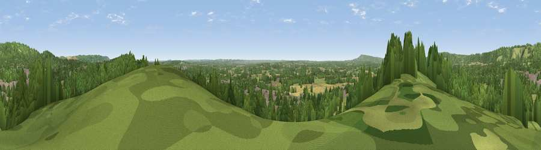

Viewpoint near Reigate
#22981 in England · top 20% of its area beats it · near ReigateThe view, rendered

A 360° render of this exact spot computed from the terrain model, tree cover and land cover — summer colours, afternoon light, calibrated against photographs of famous viewpoints. Real trees, hedges and buildings will differ in detail.
The panorama
Grey silhouette: terrain skyline in each direction (720 bearings, Earth curvature and refraction included). Dashed green: skyline with trees (+15 m) and buildings (+8 m) as obstacles. Blue strip: how far the ground is visible on each bearing.
Where the view opens
Wedge length = distance to the farthest visible ground on that bearing (vegetation-aware). Rings at 10, 25 and 50 km.
What fills the view
53% woodland · 26% grassland · 14% built-up · 6% cropland
Angular shares of the visible panorama (visual magnitude), not map area. Landscape diversity 0.50 (0–1 Shannon).
Key numbers
More beautiful places nearby
The staircase of upgrades: each row has a higher view potential than everything closer. Driving times are estimates from straight-line distance, calibrated against real road routing — check an actual route before setting out.
| Place | Direction | Drive | Score |
|---|---|---|---|
| Viewpoint near Reigate | W · 1 km | ~2 min | 53.6 |
| Viewpoint near Reigate | N · 3 km | ~6 min | 66.7 |
| Viewpoint near Lower Kingswood | NNW · 3 km | ~7 min | 67.8 |
| Box Hill | WNW · 5 km | ~11 min | 70.4 |
| Viewpoint near Box Hill Village | WNW · 5 km | ~12 min | 71.0 |
| Viewpoint near Coldharbour | WSW · 12 km | ~23 min | 71.3 |
| Wolstonbury Hill | S · 36 km | ~54 min | 79.6 |
| Viewpoint near Westmeston | S · 37 km | ~56 min | 81.1 |
51.23031, -0.20931 · source: screening · position refined by local search. Computed location — check access rights before visiting.